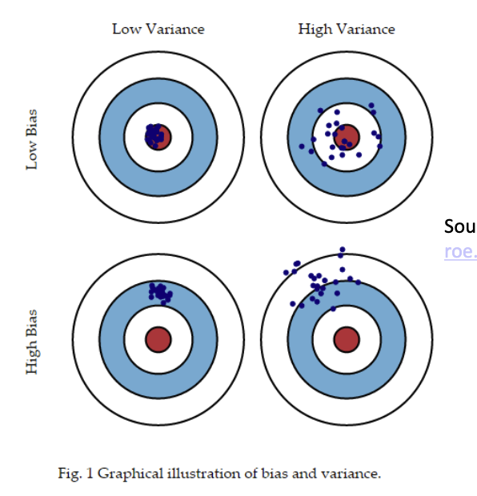
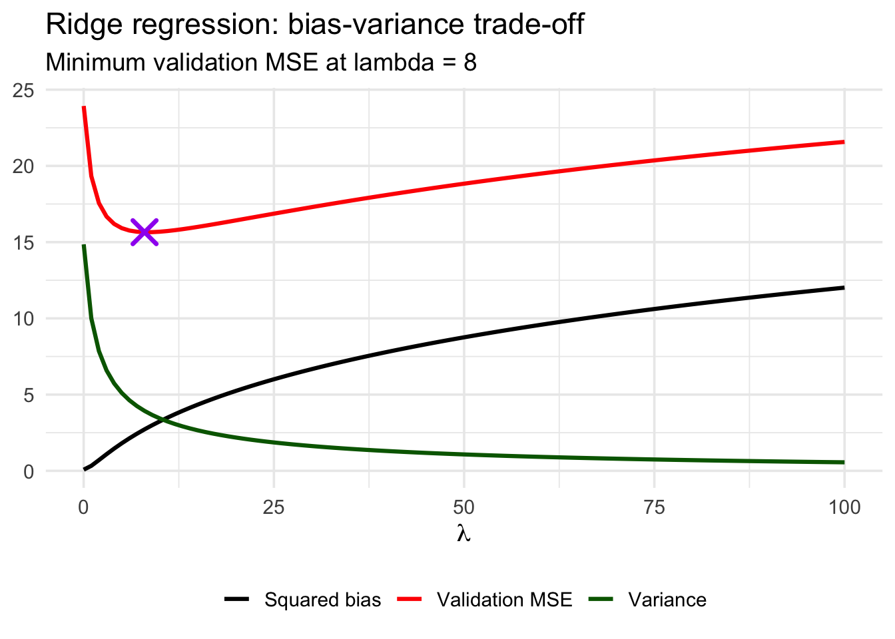
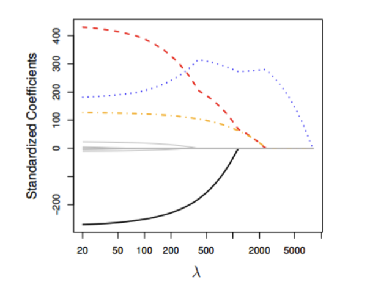

Simple data mining method which selects predictors based on some criteria
\(p\)-values below a certain threshold (ex. only include variables where \(p\)-values \(<0.01\))
Smallest value of the Akaike Information Criterion (AIC), a measure of relative quality of statistical models
There are a number of problems with it:
The final model is not guaranteed to be optimal in any specified sense
The procedure yields a single final model, although there are often several equally good models
Stepwise regression does not take into account a researcher’s knowledge about the predictors, it may be necessary to force the procedure to include more important predictors.
We should not jump to the conclusion that all the important predictor variables for predicting \(y\) have been identified, or that all the unimportant predictor variables have been eliminated. It is possible that we may have committed a Type I or Type II error.
Many \(t\)-tests testing \(\beta_k=0\) are conducted in a stepwise regression procedure. The probability is therefore high that we included some unimportant predictors or excluded some important predictors.
The # of observations has to be larger than the # of predictors
In practice, in OLS regression we should have at the very least 10 observations per predictor
Probability of type II error (incorrectly failing to reject \(H_0\)) decreases as the number of observations per predictor increases
Multicollinearity
If the predictors are strongly correlated, the OLS \(\beta\) coefficient estimates have large variances, and they may be far from the true value
Overfitting
The way OLS regression parameters are estimated, we will always have some estimate for the coefficients of every predictor and they will often be non-zero, even though some of these predictors may not be truly related to the dependent variable.
These non-zero parameter estimates may not make much sense when fitting the same model to a different dataset
Ridge Regression
Ridge regression offers a solution to these issues. In particular, it:
Allows for a large # of predictors relative to the # of observations
Allows for multicollinearity
Deals with overfitting by shrinking the coefficients of variables towards 0
Instead of minimizing the \(\text{SSE}\), it minimizes the \(\text{SSE}\) subject to a bound (a constraint) on the quantity called \(L_2\text{norm}\), which is simply the square root fo the sum of all squared \(\beta\) coefficients.
Here, \(\lambda\ge0\) is called the tuning parameter.
The shrinkage penalty
\(\lambda\) is called the tuning parameter which controls the relative impact of \(\text{SSE}\) and the shrinkage pentalty on the regression coefficient estimates.
When \(\lambda=0\), the shrinkage penalty term has no effect, and you get plain OLS.
As \(\lambda \to \infty\), the impact of the shrinkage penalty grows, and the ridge regression coefficient estimates \(\hat{\beta_i}\) will approach 0, making the model smaller
The intercept term
Note that \(\hat{\beta}_0\) is not part of the shrinkage penalty. We do not want to shrink the intercept, which is simply a measure of the mean value of \(y\) when all predictors are equal to 0.
Standardizing predictors
For ridge regression, we standardize predictors.
For each predictor \(x\), compute the mean \(\bar{x}\) and standard deviation \(s_x\). Then, take the original value of the predictor, subtract it from \(\bar{x}\), and divide the difference by \(s_x\).
This way, each standardized predictor will have a mean of 0 and a standard deviation of 1 prior to running the regression.
Bias and Variance
Bias of an estimator
Bias of an estimator is the difference between the expected value of the estimator and the true value of the parameter.
For example, \(\bar{X}\) is a point estimator of population mean \(\mu\). The bias of estimator \(\bar{X}\) is the difference between \(\mathbb{E}(\bar{X})\) and \(\mu\). However, because \(\mathbb{E}(\bar{X}) = \mu\), the difference is 0, and \(\bar{X}\) is an unbiased estimator of \(\mu\).
Similarly with OLS regression, \(\mathbb{E}(\hat{\beta}_i)=\beta_i\).
Therefore, bias refers to the error that is introduced by approximating a real-life problem, which may be extremely complicated, by a much simpler model. Linear regression assumes that there is a linear relationship between the independent variable in predictors. In real life, it is highly unlikely that there is such a simple linear relationship so there will absolutely be some bias in the estimate of \(\hat{y}\).
Variance of an Estimator
If a variable is normal, both the sample mean \(\bar{X}\) and the sample median \(\tilde{X}\) are unbiased estimators of the population mean \(\mu\).
Traditionally, statisticians have preferred unbiased estimators with the smallest variance.
In the context of regression analysis, variance is the amount \(\hat{y}\) would change if we estimated it using a different training data set.

MSE: A function of bias and variance
The MSE (and consequently the RMSE) in the validation data is a function of both bias and variance.
In order to minimize the MSE in unseen data, we need to select a model that simultaneously achieves low variance and low bias.
OLS seems to be a good model because it yields unbiased estimates of \(\hat{y}\) with the smallest variance. But even though OLS estimators are unbiased, they still have higher variance than some biased estimators.
Ridge regression predictions \(\hat{y}\) are biased, but have lower variance than OLS predictions for certain values of \(\lambda\).
A visualization:

We can see as \(\lambda\) gets larger, variance shrinks but MSE and bias grows. The trade-off benefit is better predictions on new data.
OLS vs Ridge
OLS wins
Ridge wins
Lots of data, few features
Care about unbiased coefficient estimates or classical inference (SE, confidence intervals, p-values)
Care about interpretability
You want to predict new data
Features are highly correlated
You have many features relative to observations
OLS fit is noisy or unstable
Ridge regression interpretation
We can show that ridge regression doesn’t set coefficients exactly to zero unless \(\lambda = \infty\), in which case they’re all 0. While ridge regression performs well in terms of prediction accuracy, it does poorly in terms of offering a clear interpretation.
Because ridge regression modifies the coefficients, it’s pretty difficult to interpret and get significance from them.
In summary:
We select the value of \(\lambda\) which yields the lowest MSE on unseen data
For that optimal value of \(\lambda\), look at the plots of coefficients against \(\lambda\) to figure out which variables have the greatest predictive power
An important limitation is that ridge regression is it will include all \(k\) predictors in the final model (unlike the stepwise linear regression that we saw before).
Lasso Regression
Lasso is like ridge, but it can set the values of certain coefficients to exactly 0 for different values of \(\lambda\) and therefore exclude them. It stands for Least Absolute Shrinkage and Selection Operator.
Lasso regression finds \(\hat{\beta}^L_i\) that minimizes the quantity below:
Like with ridge, when \(\lambda=0\), we get OLS estimates. As \(\lambda\) increases, the amount of non-zero standardized coefficients decreases:

Like with ridge regression, we are able to see which predictors have the largest effect on the dependent variable by looking at the magnitude of the coefficients for different levels of \(\lambda\), especially the value that yields the lowest MSE on unseen data.
There are issues with interpreting the coefficients of lasso regression due to bias (unlike with OLS).
In summary:
We select the value of \(\lambda\) which yields the lowest MSE on unseen data
For the optimal value of \(\lambda\), we will look at the plots of coefficients against \(\lambda\) to figure out which variables have the greatest predictive power.
Comparing Ridge and Lasso regression
Lasso regression has a major advantage over ridge, in that it is able to produce simpler and more interpretable models that involve only a subset of the predictors. However, one is not inherently better than the other.
Lasso will perform better where a relatively small # of predictors have substantial coefficients, and the remaining predictors have coefficients that are very small or equal zero
Example in R
library(ISLR)library(glmnet)
Loading required package: Matrix
Loaded glmnet 5.1
options(scipen=999)head(Hitters)
AtBat Hits HmRun Runs RBI Walks Years CAtBat CHits CHmRun
-Andy Allanson 293 66 1 30 29 14 1 293 66 1
-Alan Ashby 315 81 7 24 38 39 14 3449 835 69
-Alvin Davis 479 130 18 66 72 76 3 1624 457 63
-Andre Dawson 496 141 20 65 78 37 11 5628 1575 225
-Andres Galarraga 321 87 10 39 42 30 2 396 101 12
-Alfredo Griffin 594 169 4 74 51 35 11 4408 1133 19
CRuns CRBI CWalks League Division PutOuts Assists Errors
-Andy Allanson 30 29 14 A E 446 33 20
-Alan Ashby 321 414 375 N W 632 43 10
-Alvin Davis 224 266 263 A W 880 82 14
-Andre Dawson 828 838 354 N E 200 11 3
-Andres Galarraga 48 46 33 N E 805 40 4
-Alfredo Griffin 501 336 194 A W 282 421 25
Salary NewLeague
-Andy Allanson NA A
-Alan Ashby 475.0 N
-Alvin Davis 480.0 A
-Andre Dawson 500.0 N
-Andres Galarraga 91.5 N
-Alfredo Griffin 750.0 A
Warning in .resolve_control(control = control, nvars = nvars, deprecated =
list(thresh = if (!missing(thresh)) thresh, : Passing 'thresh' to glmnet() is
deprecated. Use control = list(thresh = ...) instead.